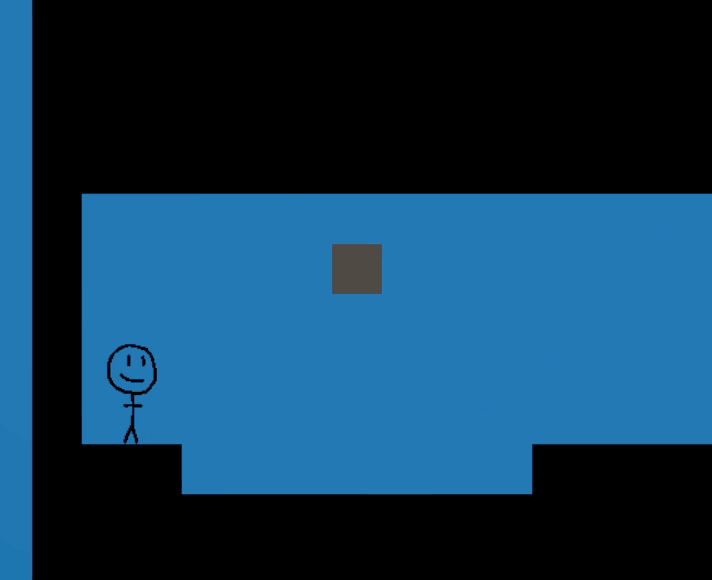

Golds Pike's main mechanic is a hook that can grab onto anchors and allow the player to manipulate themself. They have to go find Golds Pike!

Our team used Unity and C# to remake The Legend of Zelda for the NES.